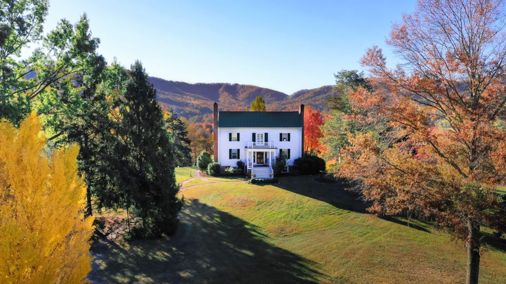
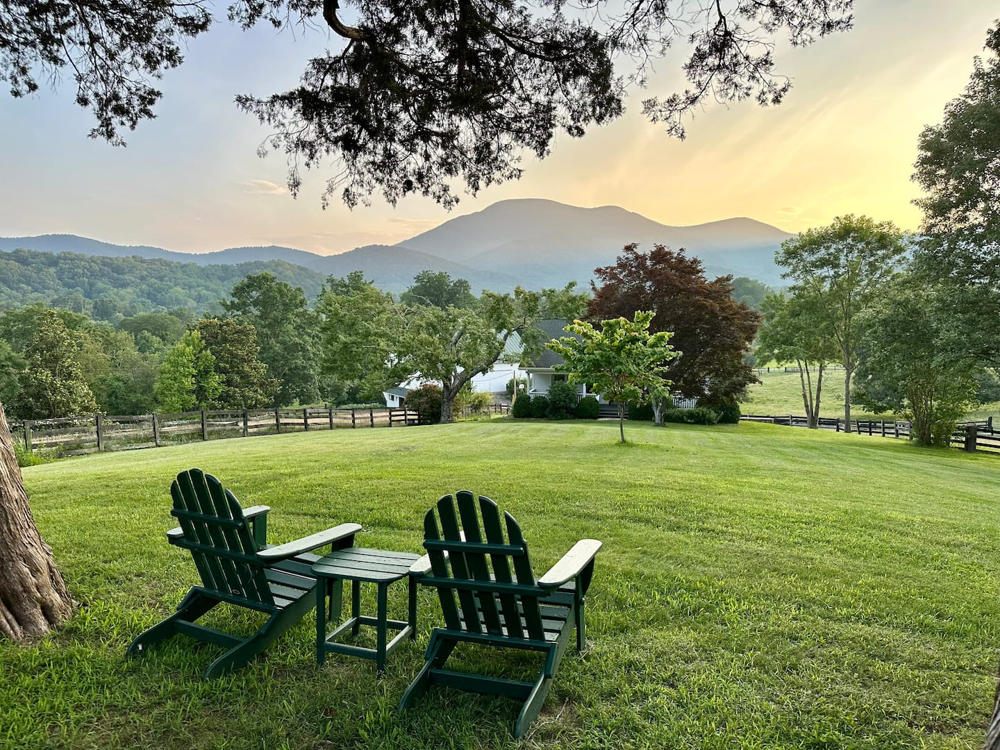

Farmhouse
5 bedrooms, 4 full baths and 2 half baths. Sleeps about 10.

An 1840s farmhouse on a little over 70 acres in Roseland, Virginia. Mountain views, a private hot tub, and enough room for everyone to stay in one place.
Book on Airbnb Things to do nearby
The main listing is the farmhouse: five bedrooms, a kitchen that looks out to the mountains, and a dining table that can seat fourteen. There’s a hot tub on the property, fiber Wi-Fi, and plenty of space outside.
If you need more beds, we can add the Guest Cottage and the Schoolhouse for an extra nightly fee. Message us on Airbnb before you book if you want the whole place.
5 bedrooms, 4 full baths and 2 half baths. Sleeps about 10.
4 bedrooms, 3 baths. Sleeps 9. Short walk down the hill.
2 bedrooms, historic loft. Sleeps 4–5. No bathroom inside.
We aren’t a big event venue, but we can often host a small wedding, family reunion, or weekend with friends — the kind of gathering where people stay on the farm instead of driving back and forth.
If that’s what you’re hoping for, send a note with dates and about how many people when you reach out on Airbnb. We’ll tell you honestly whether it fits.
Nelson County, at the base of Wintergreen. Highland cattle and mini donkeys in the pastures, a pond and the South Rockfish River on the property, and a walk over to Blue Toad if you want cider without getting in the car.
High View Farm